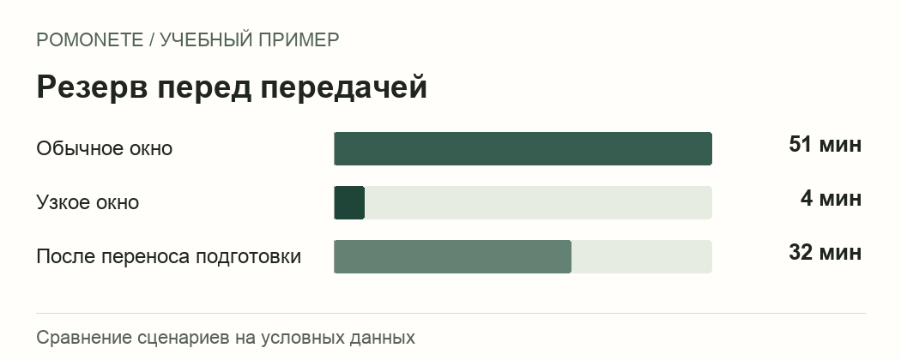

Доступное окно отгрузки Яндекс Маркета и резерв времени команды
Как селлер определяет свободные минуты до передачи после очереди и вспомогательных операций.
Селлер Яндекс Маркета получает окно передачи, часть которого уже занимает текущая работа. Перед тем как добавить новую группу, посчитаем запас именно рабочих минут. Это полезно, если ТК приезжает по расписанию и переноса ближайшего срока не предполагается.
Как определить доступное время
Сложите минуты сотрудников, допущенных к выбранному участку в нужном интервале. Уберите перерывы, общие обязательства и операции, которые догоняют другой поток. Для многозадачной смены составьте круг занятости человека. Одни и те же минуты нельзя назначить двум участкам.
Чтобы пересобрать расчёт «Резерв перед передачей» для своего магазина, перенесите в него исходные числа. В формуле A обозначает «минуты участка до срока», B обозначает «ранее обещанные заказы, мин», C обозначает «обязательные подготовительные работы, мин». Две вычитаемые суммы хранят отдельно, чтобы можно было проследить происхождение изменения и избежать двойного вычета. Запишите рядом период и охват каждого среза. Если для одной строки известна только оценка, оставьте пояснение непосредственно рядом с ней: по итоговой цифре источник уже не восстановить.
Резерв перед передачей = A − B − C
| Условие | Минуты участка до срока | Ранее обещанные заказы, мин | Обязательные подготовительные работы, мин | Резерв перед передачей |
|---|---|---|---|---|
| Обычное окно | 420 | 302 | 67 | 51 мин |
| Узкое окно | 385 | 307 | 74 | 4 мин |
| После переноса подготовки | 385 | 307 | 46 | 32 мин |

В сценарии «Обычное окно» в формулу подставляем минуты участка до срока = 420, ранее обещанные заказы, мин = 302, обязательные подготовительные работы, мин = 67. Получается 51 мин. Остаток выдерживает ещё несколько подготовленных заказов.
В сценарии «Узкое окно» в формулу подставляем минуты участка до срока = 385, ранее обещанные заказы, мин = 307, обязательные подготовительные работы, мин = 74. Получается 4 мин. Оборудование доступно позже, а часть заказов приходит в похожее время.
В сценарии «После переноса подготовки» в формулу подставляем минуты участка до срока = 385, ранее обещанные заказы, мин = 307, обязательные подготовительные работы, мин = 46. Получается 32 мин. Две задачи перенесены на последующий интервал без ущерба текущей передаче.
Если «Обычное окно» взять за исходную точку, «Узкое окно» меняет показатель «резерв перед передачей» на -47 мин, а «После переноса подготовки» на -19 мин. Между двумя последними строками разница составляет 28 мин при вычитании второй из третьей. Смотрите, какой именно вход изменился между строками. Если менялись объём и условия одновременно, итог сравнения относится ко всему сочетанию.
При расчёте «резерв перед передачей» оставляйте исходную точность, пока складываете значения и сверяете строки. В таблице видны 51 мин, 4 мин и 32 мин, уже округлённые для чтения. При суммировании многих периодов используйте исходные данные. Например, удельные результаты с разными знаменателями нужно пересобрать из числителей и соответствующих объёмов, а затем округлить. Пометьте, где округление применяется, чтобы при передаче отчёта речь шла об одних и тех же числах.
Где нулевой резерв уже опасен
Если по плану укладываются с точностью до минуты, у процесса нет запаса на сложный заказ или сбой. На коротком окне оставьте границу неопределённости по фактическим сменам. Проверяйте, какой остаток нагрузки пришёлся на самые последние минуты.
Воспроизводимость здесь начинается с критериев включения. Отметьте, чем «Обычное окно» отличается от «После переноса подготовки» и какие наблюдения будут отброшены в каждой строке. Как подтверждение используйте журнал склада и временные отметки заказов. У неполных записей выделите одну причину. Она покажет, какие цифры ещё стоит собирать и какой объём анализа потерян.
Для сравнения выведите короткий журнал с временем поступления работы, началом обработки и моментом передачи. Длительность операции измеряют на нескольких сменах, чтобы короткая спокойная неделя не стала единственной нормой. Товары разных размеров и сложность сборки записывают отдельными группами. На узком участке неравномерность важна так же, как общая загрузка: два одинаковых дневных итога могут оставить разный хвост необработанных заказов.
Что сильнее всего меняет результат
От результата 4 мин в строке «Узкое окно» пересчитайте несколько вариантов. Проверьте «минуты участка до срока», «ранее обещанные заказы, мин», «обязательные подготовительные работы, мин». Прибавка около десятой доли на вход показывает реакцию за один шаг. Целые числа сохраняем целыми. Для долей, где прирост выводит числитель за предел базы, пробуем уменьшение. Все остальные параметры при каждой подстановке сохраняются.
- «Минуты участка до срока» меняется с 385 на 423. При прежних остальных входах получается 42 мин, сдвиг составляет 38 мин.
- «Ранее обещанные заказы, мин» меняется с 307 на 338. При прежних остальных входах получается -27 мин, сдвиг составляет -31 мин.
- «Обязательные подготовительные работы, мин» меняется с 74 на 81. При прежних остальных входах получается -3 мин, сдвиг составляет -7 мин.
Больше всего изменила итог подстановка «минуты участка до срока». Отклонение составило 38 мин. До сбора новых данных оцените, насколько правдоподобен такой шаг. Например, расход может подтверждаться документом, а объём пока наблюдается лишь частично. Уточняйте прежде всего те входы, где одновременно возможен заметный сдвиг и мало подтверждений.
Если одно окно проходит с большим резервом, сравните стоимость переноса части заказов на него. Изменение может освободить участок в пиковое время, но поменять срок. Проверка должна включать и ожидания, которые видит покупатель.
Как применить к расписанию
До очередной передачи выпишите три самые длительные оставшиеся операции. Найдите, можно ли выполнить их параллельно, нанять помощь или отложить задачу без заказа. После закрытия проверьте фактический резерв и повторное использование данных для других смен.
Полезно раз в несколько смен собрать пакет отклонений и приложить отметки о причинах. У одного опоздания бывает несколько объяснений, и назначать его первому видимому участку рискованно. Если временный ресурс перемещали между зонами, включите в расчёт, где исчезли эти часы. После пилота проверьте верхний хвост длительности и число заказов, которые перешли за срок.
Чтобы отделить ошибку оценки от реального изменения, после следующего отчёта соберите «резерв перед передачей» дважды. Сначала используйте исходное правило, затем замените только один предположенный вход фактическим. Так аналитика селлера Яндекс Маркета покажет, стоит ли тратить время на повторный замер или менять рабочую операцию. В итоговом отчёте сохраните обе даты проверки.